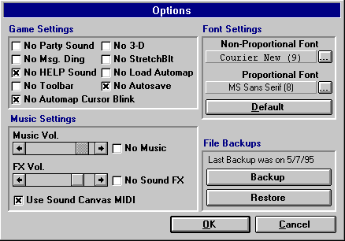

Game Options Window

When one selects the Options button from the Main Menu, the window to the left will be displayed.
Game Options
From here, you can turn on or off the Music and Sound FX. You can also set the desired volume (provided that your sound card supports adjustable volume), which will be saved. Also available are the following options:
No Party Sound
This will disable the background sounds made by other characters in a party during combat.
No Msg. Ding
Checking this will disable the message 'dink' sound that's heard whenever a message appears in the Message List box..
No Help Sound
This will disable the "HELP!" sound that's heard when a party member is near death.
No Toolbar
This will remove the Toolbar that appears when the game is in play. Useful for making more screen room in 640x480 resolution.
No 3-D
The No 3-D option either turns on or off the 3 Dimensional look to the game's windows. This may speed up the drawing of the windows on some systems.
No StretchBlt
No StretchBlt is for Video Drivers that cause the game to display black or gray squares when the maze and monsters should be shown. Turning this on will cause the game not to shrink or stretch the game's pictures (this feature has been added to compensate for older video drivers).
No Load Automap
Selecting this will tell the game not to automatically load the Automap when play beings.
No AutoSave
The option is for systems that don't have a large enough disk cache to keep up with the game's general disk access. Switch to this option if your system appears to be slow while walking in the dungeon due to disk hits. With this selected, the game will only save when you enter the city or a character dies.
No Automap Cursor Blink
This will disable the blinking of the Automap directional cursor.
Use Sound Canvas MIDI
This will cause the gme to use the MIDI files that were designed specifically for a Sound Canvas-compatible Sound Card (digital sound). Using this setting with a normal MIDI sound card will not cause any problems - it may even make the music sound better!
It's highly recommended that one try the Sound Canvas MIDI with a normal sound card, because this setting may sound better even without a Sound Canvas-compatible card!
Screen Saver... Note: this information is retained for legacy systems only, the screen saver is not intended for use with more modern OS's.
If you purchased the CD-ROM/Enhanced version of Mordor and installed the Screen Saver, you can run the Screen Saver configuration from the Options window.
NOTE: If you test the screen saver while in Mordor, no Music or Sound will be heard (if you have it selected). This is because Mordor must receive a system-wide message when the saver is activated before it can release sound to the screen saver, and simply testing does not send this message to the game. When the Screen Saver is activated by the Windows OS, Mordor will release sound control and minimize for the Saver.
Font Settings
This section allows the player to set the Proportional (fix spaced) Font and the Non-Proportional (non-fixed spaced) Font and Font Sizes for the game. Selecting the Default button will return the fonts to their original settings.
Having the game set to the default Font settings will cause forms to be loaded quicker and display faster on slower machines.
File Backups
This feature was built for security. It allows the player to back up the game data files whenever necessary (it's no fun playing for 500 hours and losing your Data for unknown reasons). It is up to you as to how often you want to back up the game data, but it's recommended that players do it at least once every week.
It is not recommended that players use this feature as a 'Load & Save' option for restoring games because of dead characters, etc. since that is not what it was intended for.
Move to the next section to read about Character Information.
Move to the previous section to read the Main Menu.
M1: "The Depths of Dejenol" is a Trademark of Decklin's Domain Ltd and is © Copyright 1994-2026 All Rights Reserved